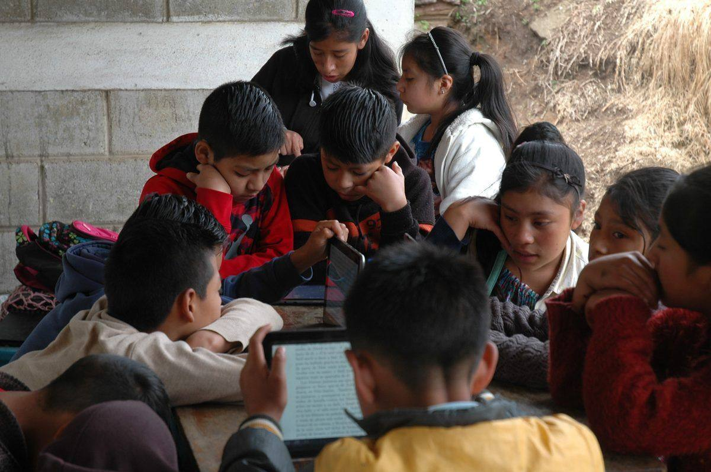
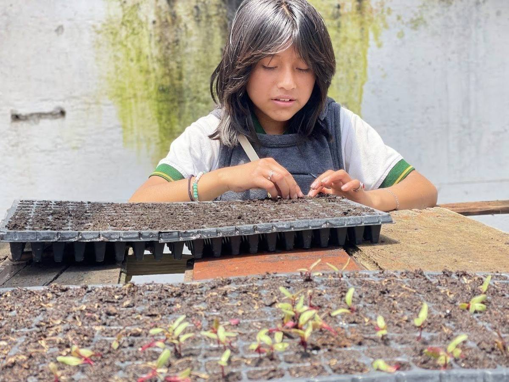
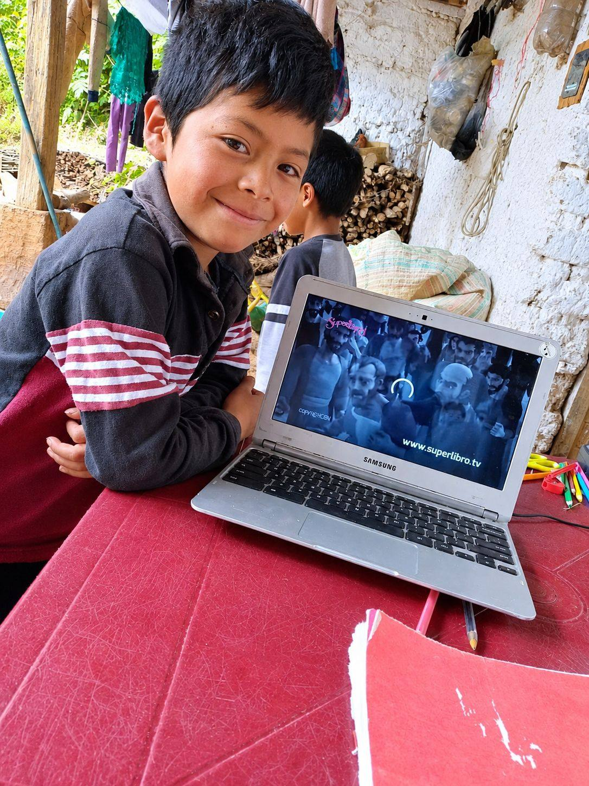
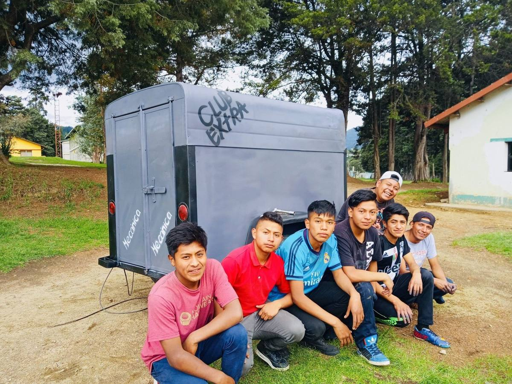

Funds, stock, employers, equipment and tributes
Options for donors, businesses and churches who want to go beyond a card donation.

Donor-advised funds (DAF)
If you have a donor-advised fund (for example, at Fidelity Charitable, Schwab Charitable or a community foundation), you can recommend a grant to GuateStar from your fund’s portal. Search for GuateStar by name or by our EIN, 47-2953590. Let us know when you recommend it so we can thank you and confirm receipt.
Write to us
Stock and securities
Giving appreciated stock can have U.S. tax advantages over selling it and donating the cash. Write to us before making the transfer: we’ll send you instructions so we can identify your gift. Consult your advisor.
Request instructions
Your employer can match your gift
Many companies match their employees’ gifts to 501(c)(3) organizations, sometimes two to one. Ask your HR department whether your company has a matching gift program, and if they need GuateStar’s details, write to us.
Get details for my employer
Donate computers
Our goal for 2027 is to move toward every child having their own computer. If your company, church or school is replacing laptops or tablets in good condition, we can give them a second life in Totonicapán. Write to us before sending any equipment so we can coordinate what we need and how to get it there.
Offer equipment
Give in honor or in memory of someone
Celebrate a birthday, a wedding or a graduation, or remember a loved one with a gift that opens doors. Make your gift online and write to us with the name of the person you’d like to honor so we can acknowledge your gift.
Tell us about my tribute
Businesses, churches and groups
Sponsor a Club Extra center, a group of scholarship students or the computers for a community. You can also run a fundraiser with your church, your team or your school, or join the “Nadie Llega Solo” campaign for Guatemalan donors.
Propose a partnershipInformation about tax benefits is general and refers to U.S. law. It is not tax or legal advice.
Prefer a simple gift?
Give online in a couple of minutes, once or monthly.